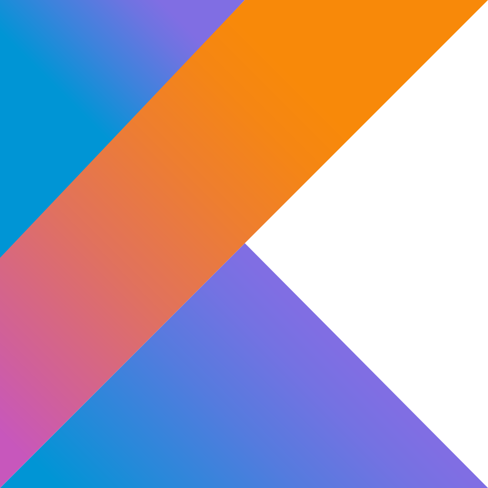
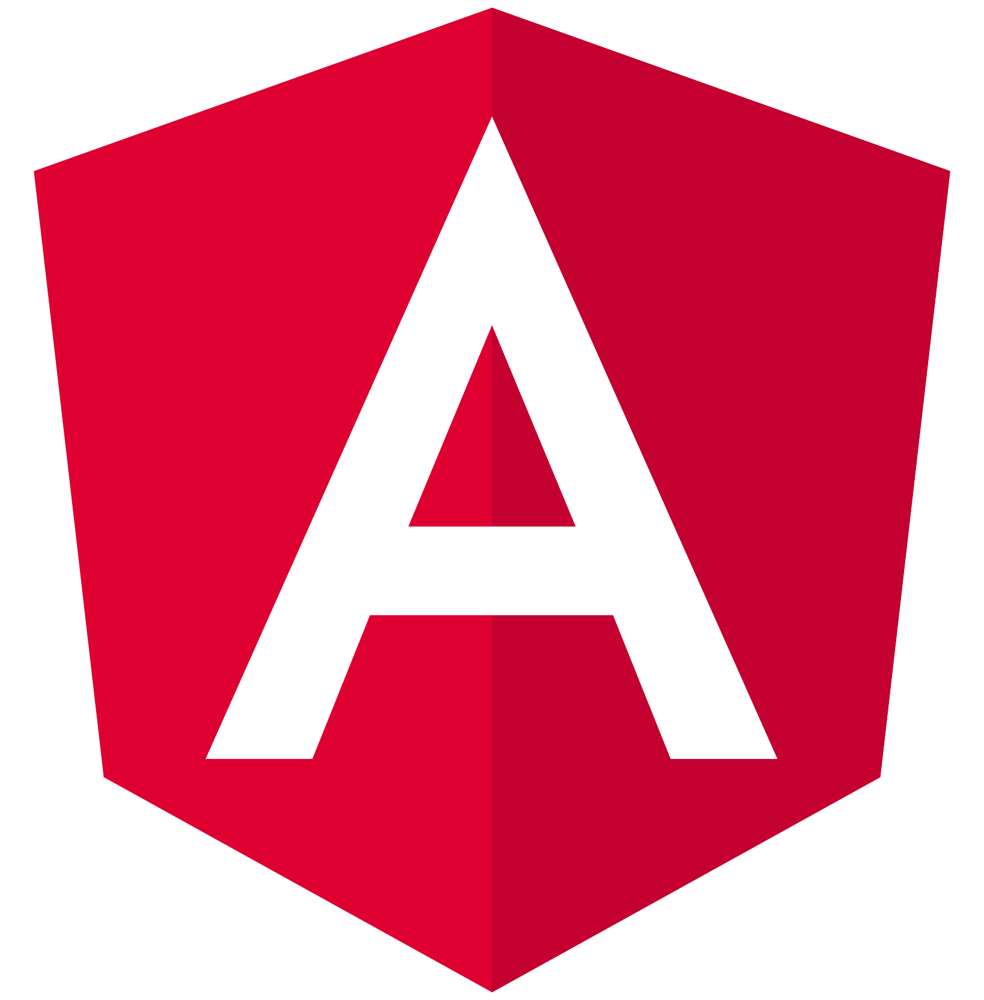
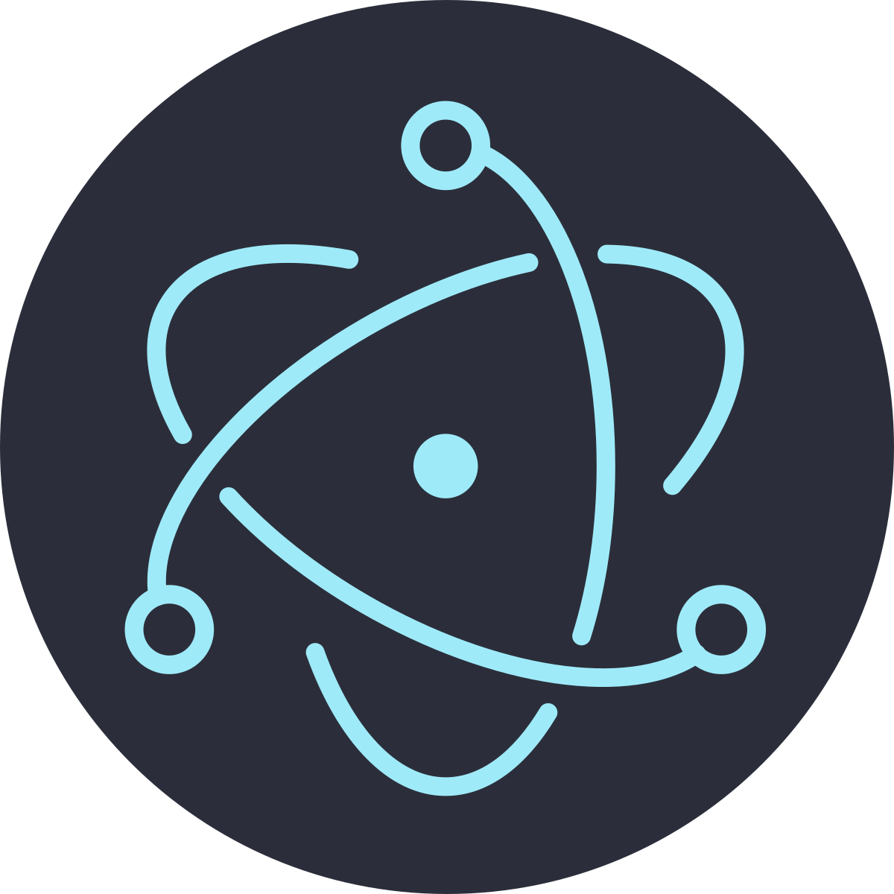
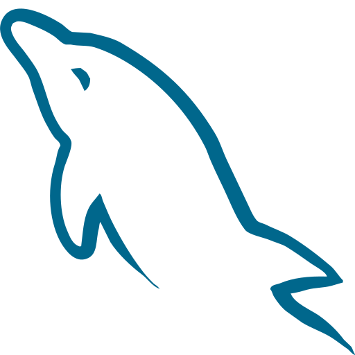
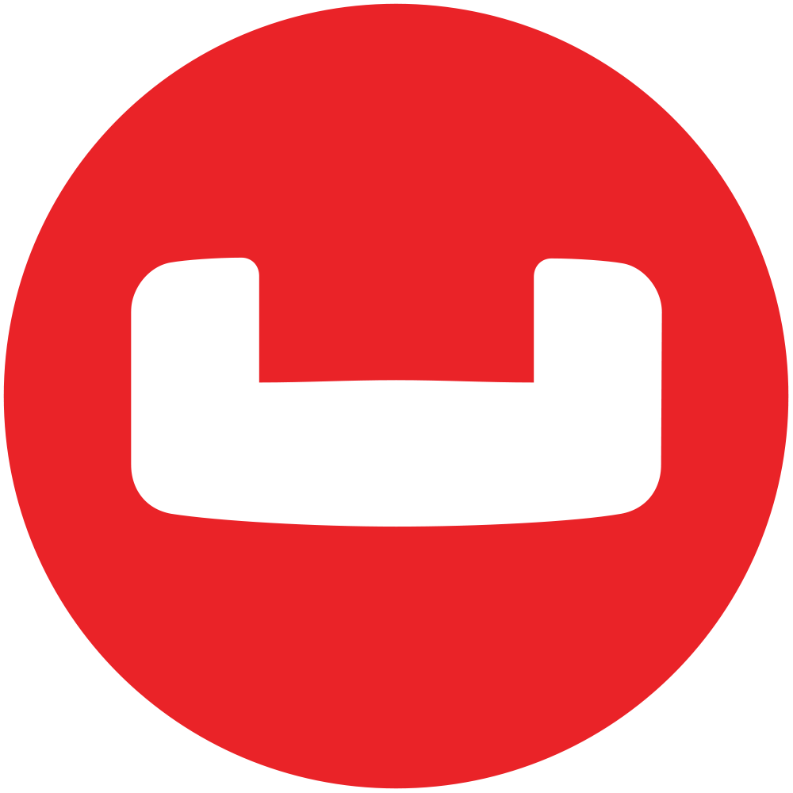
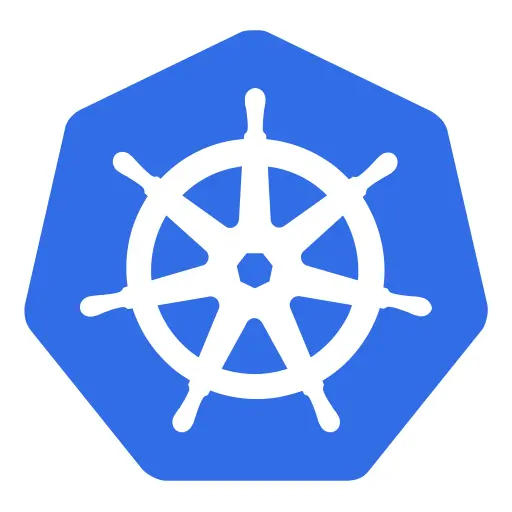
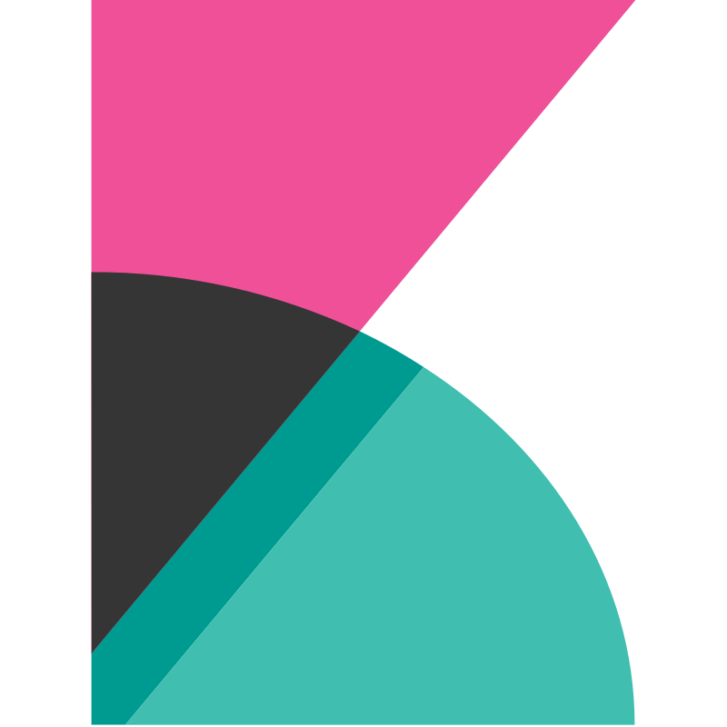
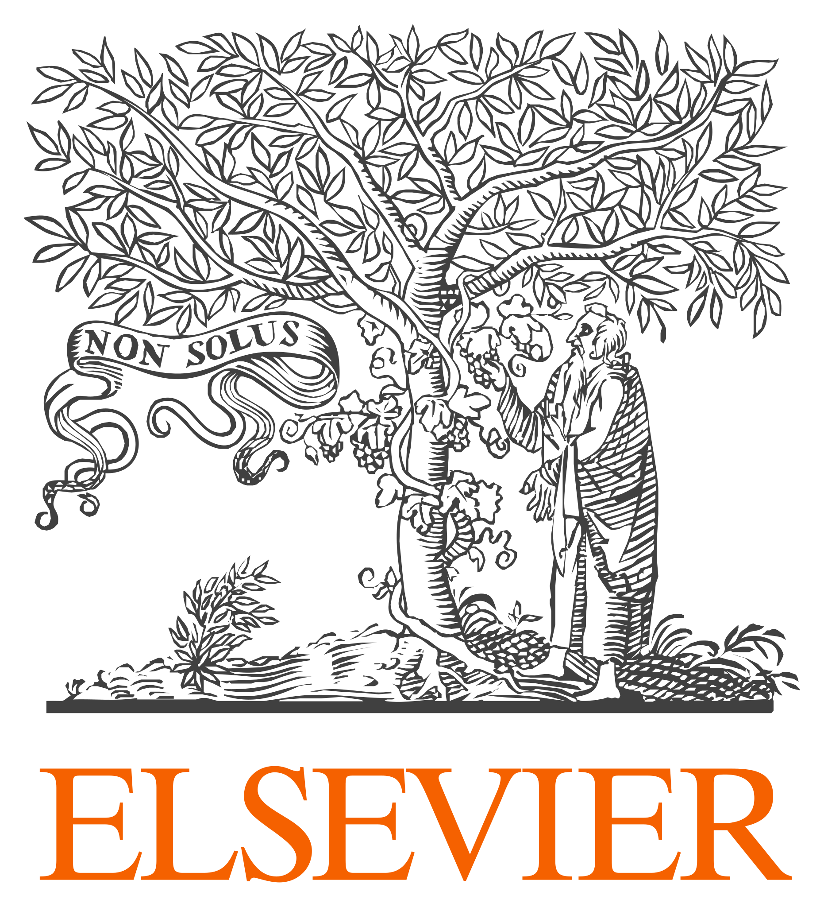
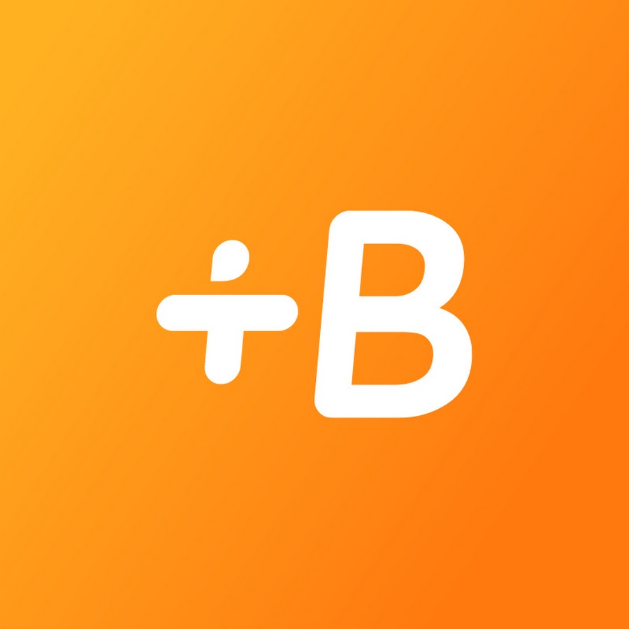

Bienvenido, soy Juan Antonio Martínez López. En los últimos años, descubrí gracias a mi Grado y Máster en la Universidad de Murcia y a los múltiples proyectos de software en los que participé que quiero dedicar mi futura vida profesional a la Ingeniería de Software, especialmente al Desarrollo Backend. Soy un apasionado de la Ingeniería de Software, por lo que incluso utilizo mi tiempo libre para aprender más sobre Arquitecturas de Software Limpio, Algoritmos y Estructuras de Datos.
Actualmente, trabajo como Desarrollador Backend en Onebox - Ticket Distribution System.
 HTML
HTML
 CSS
CSS
 Java
Java
 Python
Python

Kotlin
Angular
Electron.js Mockito
Mockito
 Karate
Karate
 Testcontainers
Testcontainers
 FastAPI
FastAPI
 Spring Boot
Spring Boot

MySQL Oracle SQL
Oracle SQL
 PostgreSQL
PostgreSQL
 MongoDB
MongoDB

Couchbase Elasticsearch
Elasticsearch
 Apache Kafka
Apache Kafka
 AWS
AWS
 Docker
Docker

Kubernetes Datadog
Datadog

Kibana
AWS
 Git
Git
 GitHub
GitHub
 GitLab
GitLab
 TortoiseSVN
TortoiseSVN
Obtuve mi Máster en Nuevas Tecnologías con especialización en Tecnologías del Software en la Universidad de Murcia. Este programa especializado profundiza en temas avanzados de Desarrollo de Software, con énfasis en tecnologías y metodologías de vanguardia.
Competencias adquiridas
Terminé mi Grado en Ingeniería Informática en la Universidad de Murcia. Este programa integral me proporcionó una sólida base en Informática, Desarrollo de Software y diversas áreas clave de la Tecnología. Me dotó de las habilidades esenciales necesarias para comenzar una carrera exitosa en este campo.
Competencias adquiridas
Onebox - Ticket Distribution System es una plataforma líder en soluciones de ticketing que gestiona todo el proceso de venta, distribución y validación de entradas para eventos en tiempo real.
Como Backend Engineer, contribuyo al desarrollo y mantenimiento de su arquitectura de microservicios en la nube, asegurando escalabilidad, rendimiento y fiabilidad en un entorno de alta demanda. Trabajo con Java 17 y Spring Boot para diseñar e implementar APIs RESTful, optimizar bases de datos relacionales (MySQL, Oracle) y NoSQL (Couchbase, Elasticsearch) y gestionar sistemas de mensajería con RabbitMQ y Apache Camel.
Además, participo en la automatización y despliegue continuo mediante Docker, Kubernetes y Jenkins, garantizando una integración eficiente y un desarrollo ágil.
En Orbyn, líder en el sector fintech, participo en el diseño, desarrollo y mantenimiento de software y aplicaciones que respaldan las operaciones de la empresa. Mi rol es clave para garantizar la eficiencia, seguridad y escalabilidad de nuestros sistemas backend. Esto nos permite ofrecer servicios financieros innovadores y de alta calidad a nuestros clientes.
Mi responsabilidad principal gira en torno a la generación de APIs y microservicios para satisfacer las diversas necesidades de nuestro negocio. Estoy activamente involucrado en el desarrollo de nuevas funcionalidades, análisis de soluciones y resolución de incidentes técnicos. Parte de mi rol también incluye la gestión de despliegues en la fase de desarrollo.
Tuve el privilegio de formar parte del CyberDataLab, un equipo dinámico y altamente motivado de científicos e investigadores dedicados a avanzar en los campos de la ciberseguridad y la ciencia de datos. Como parte de mi pasantía, desarrollé dos plataformas de software innovadoras que sirvieron como base para mis tesis de Grado y Máster, abordando desafíos en la investigación avanzada y aplicaciones prácticas.
Mi tesis de Grado trata sobre el desarrollo de un marco integral para apoyar el estudio de Interfaces Cerebro-Computadora (BCIs) no invasivas. Permite a los investigadores llevar a cabo diversas fases de las BCIs de manera eficiente, desde la recolección de datos hasta su análisis.
Mi tesis de Máster se basa en un proyecto que desarrollé por mí mismo como un marco para la detección y clasificación de malware en dispositivos IoT. El marco fue diseñado para permitir a los investigadores generar modelos sofisticados capaces de identificar y clasificar malware, así como realizar predicciones en tiempo real.
Formé parte del proyecto VALKYRIES-H2020, una iniciativa pionera que surgió en respuesta a los crecientes desafíos derivados de la mayor frecuencia y gravedad de los desastres naturales. Reconociendo la necesidad urgente de mejorar la resiliencia de la infraestructura, los ecosistemas y la sociedad dentro de la Unión Europea (UE), este proyecto fue concebido como un paso importante en el ámbito de la gestión del riesgo de desastres.
Representé a la Universidad de Murcia como socio en este proyecto, participando activamente en varios Paquetes de Trabajo e incluso asumiendo un rol de liderazgo en uno de ellos. Además, lideré diversas tareas dentro de cada Paquete de Trabajo.
Este proyecto me permitió participar físicamente en reuniones plenarias en Grecia e Italia.
En Metaenlace, contribuí a varios proyectos importantes para el Servicio Murciano de Salud (SMS). Mi rol no solo involucró el desarrollo de aplicaciones, sino también la gestión de los despliegues de proyectos, asegurando actualizaciones sin problemas mediante la automatización con Jenkins.
La mayoría de los proyectos en los que trabajé contaban con una arquitectura backend robusta basada en el Spring Framework, mientras que el frontend se desarrollaba utilizando Java Server Faces y PrimeFaces, lo que refleja mi dominio de las tecnologías basadas en Java. Además, utilicé consistentemente Oracle SQL como Sistema de Gestión de Bases de Datos (DBMS) para estos proyectos.
Este rol me permitió fortalecer mi experiencia en desarrollo full-stack, gestión de proyectos y automatización de despliegues, mientras tenía un impacto significativo en las soluciones de atención sanitaria.
En Metaenlace, tuve la oportunidad de participar en una enriquecedora experiencia de pasantía donde contribuí activamente al desarrollo de una aplicación web para la programación de citas médicas.
Este proyecto contó con un backend robusto implementado con Spring Boot y una implementación paralela utilizando .NET 5, lo que demuestra mi versatilidad en múltiples pilas tecnológicas.
En el frontend, utilicé el framework Angular para crear una interfaz gráfica elegante y fácil de usar. Esta experiencia me permitió obtener una experiencia práctica tanto en tecnologías backend como frontend, mejorando mis habilidades y competencia en desarrollo full-stack.




